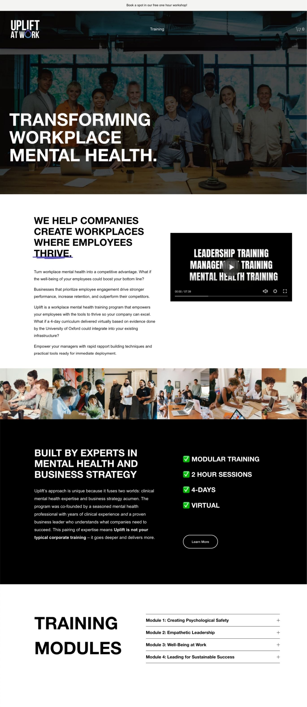
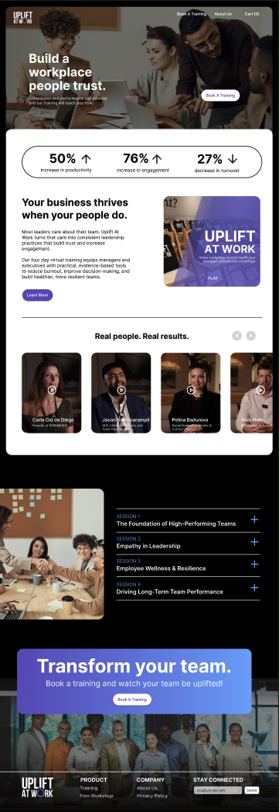
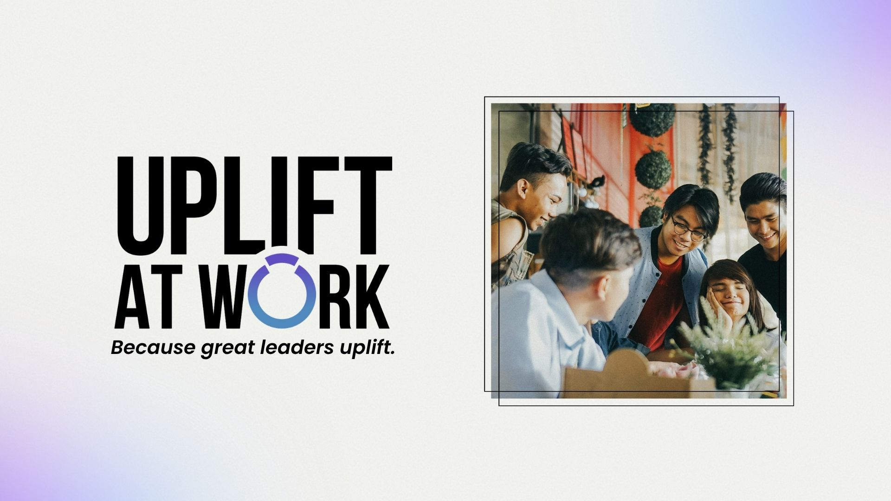
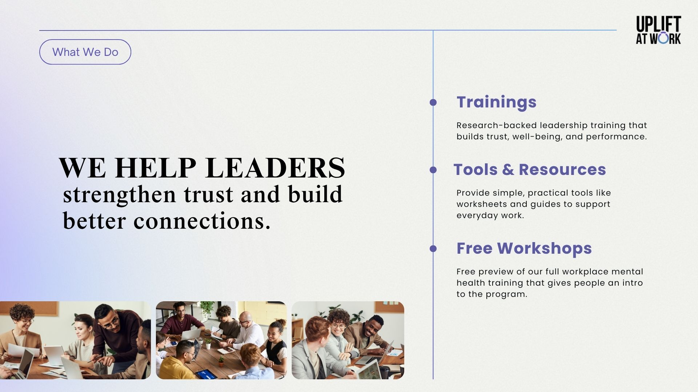
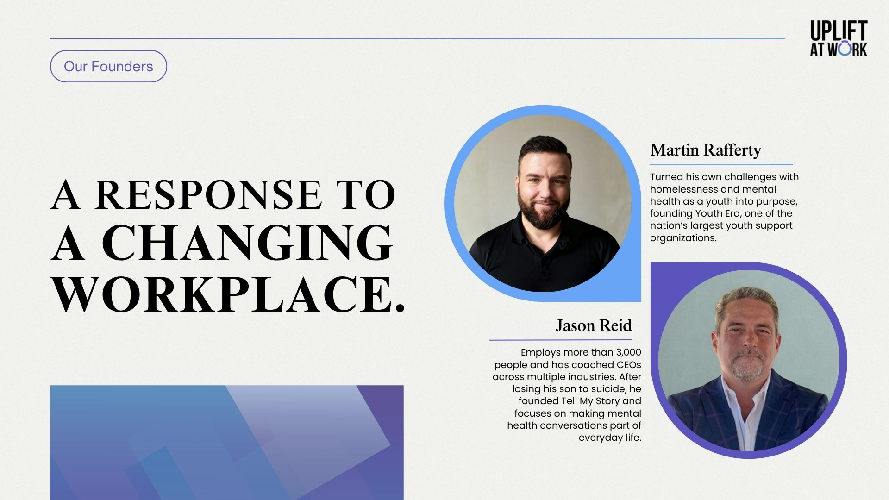

Uplift at Work: Web Redesign & Pitch Deck
A landing page and pitch deck that took companies from their first click to booking training for their managers.
Too Much to Read
Uplift at Work offers a four-day virtual training that gives managers and executives evidence-based tools to reduce burnout, improve decision-making, and build more resilient teams. But visitors couldn't tell that from the website. The page was dense, and it wasn't turning visits into bookings or quote calls.
Clear Enough to Click
I rewrote the copy to match the brand's language standards, with active, approachable headlines. Then I restructured the page: statistics first to show why it matters, a concise summary of the offer, then social proof. The "Book a Training" button appears at the top and again at the bottom, so ready visitors never have to scroll back up. I designed it in Figma and added custom elements in Squarespace.
images/uplift-before.jpgLanding page before
images/uplift-after.jpgLanding page after
Making the Case
The website's job was to get a company to book a quote call. The pitch deck's job was to close it. Presented on those calls and in company meetings, it had to convince decision-makers that training their managers was worth paying for. I gave it the same voice and visual language as the site, so the story stayed consistent from first click to final pitch.
images/deck-01.jpgPitch deck slide
images/deck-02.jpgPitch deck slide
images/deck-03.jpgPitch deck slide
The Result
One clear story across every stage of the sale: a page that explains the offer at a glance, a button that's always within reach, and a deck that makes the case in the room.